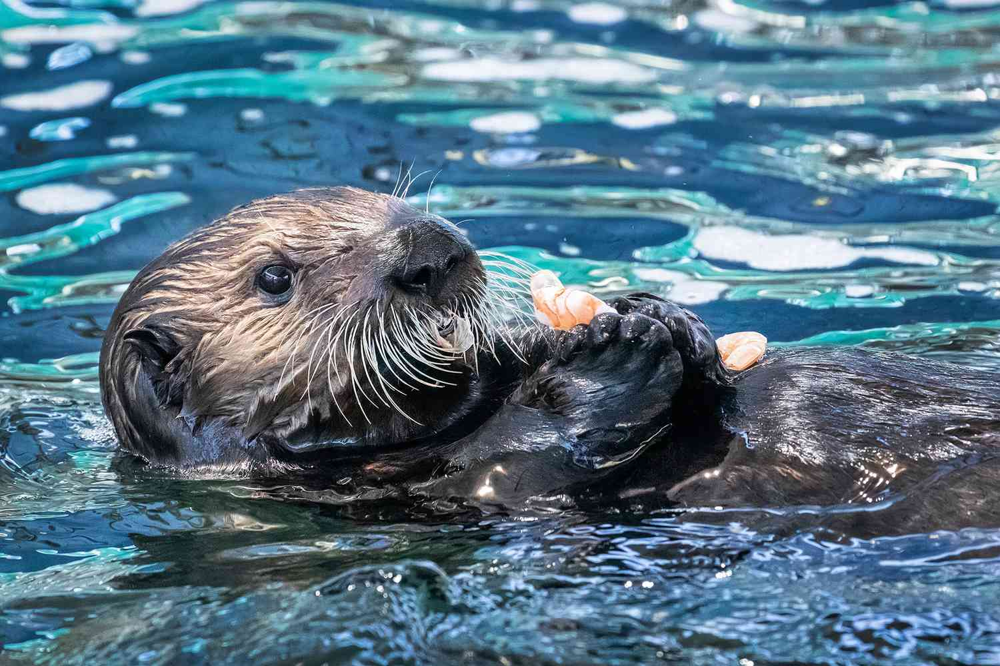
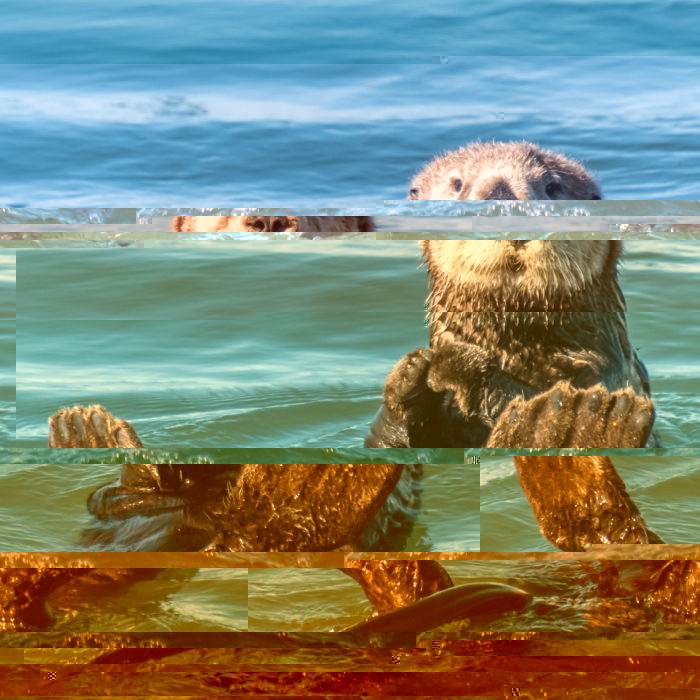

this is a cool website. There are many others like it, check out this one,, which is all about otters.
Here is a picture of an otter! Though, is this really an otter? Sure, it's a picture of an otter but what exactly is a otter? From what google says, this is also an otter
While the otter has been recontextualized for machine learning and large language models, our mind still resorts to the mammal when we first hear the word "otter". However, is this picture above, or the AI model considered an otter?
The picture is just a bunch of 0's and 1's written in code to match hex values to make up the image of an otter. But, is that still considered an otter?
How about this... An otter the product of misused code and technology.... But is this still considered an otter? Are the colors associated with this idea of an otter? What about the slicing of the image?
What if otters were nothing more than just a concept mapped to a mammal? How do we understand otters? Is our understanding of otters different? What if the image above is the regular, first thought that comes to someone when they hear the word "otter"? Who's to say our definition of otter is universal?
This webpage intends to explore how different concepts, objects, things, or ideas can mean completely different things for every individual. The otter was just an example of what otter really means to us, be it from a tech standpoint, naturalistic, or glitched.